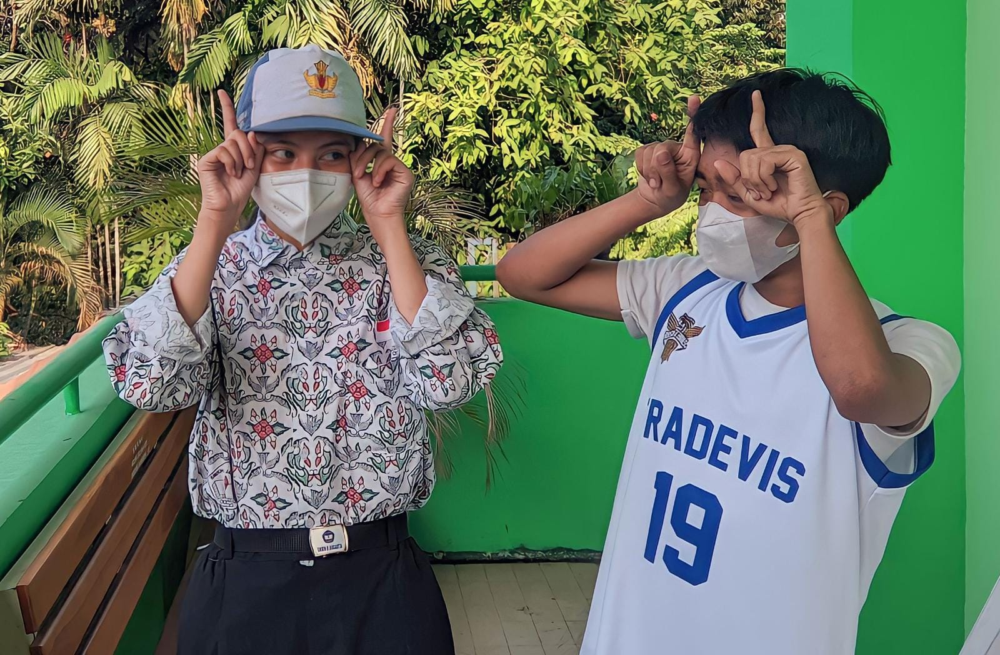

Kontak Saya
Kamu memiliki saran?
Silahkan kontak saya dengan mengklik logo WhatsApp berikut

^^^
Selamat datang di Website saya.
" Mencoba untuk terbiasa dari suatu hal yang telah hilang. "
Membuat lampu sensor
Projek Makanan P5
Hajime Isyama
Park Tae Joon
Helobagas
Kamu memiliki saran?
Silahkan kontak saya dengan mengklik logo WhatsApp berikut
^^^
Saya Aurel Ramdani dari kelas X RPL, saya adalah seorang pelajar yang bersekolah di SMK NEGERI 8 JAKARTA. Alasan saya memasuki jurusan Rekayasa Perangkat Lunak (RPL) adalah karena saya sangat tertarik dengan dunia komputer, dan juga saya memiliki hobi dalam bermain komputer maupun games.
Pendidikan : • SMK Negeri 8 Jakarta
• SMP Negeri 227 Jakarta
• MI Al-Ikhlash
Saya mempunyai teman dekat yang sangat peduli dengan saya dan selalu mendukung saya apapun kondisinya, ia bernama Erianda Diva Wibowo dari kelas X BD.
